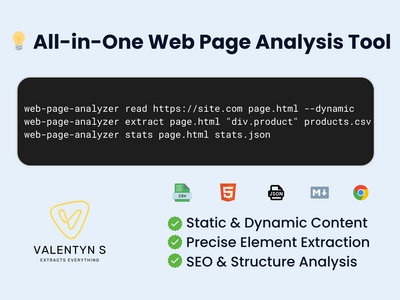
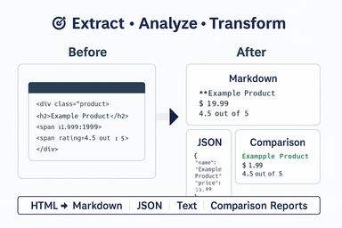

Web Page Analysis Tools: Your Complete Solution for Web Content Intelligence
Transform How You Handle Web Data - Extract, Analyze, and Automate Like a Pro

Struggling with manual web content tasks that consume valuable time and resources?
You can revolutionize your approach to web content processing with professional-grade analysis tools designed specifically for your business needs. Whether you’re extracting data for market research, monitoring competitors, migrating content, or conducting SEO analysis, these custom-built solutions automate complex tasks that would otherwise require extensive manual effort.
What Are Web Page Analysis Tools?
Web Page Analysis Tools are sophisticated command-line applications built to handle the complexities of modern web content extraction and analysis. These tools combine the power of advanced web scraping libraries, headless browser technology, and intelligent parsing algorithms to deliver reliable, scalable solutions for any web content challenge.
🔧 Core Capabilities
Advanced Web Content Processing:
- Static & Dynamic Content - Extract from both traditional HTML and JavaScript-rendered websites
- Precision Targeting - Use CSS selectors for exact data capture
- Multiple Output Formats - JSON, CSV, Markdown, Excel, and custom formats
- International Support - Flawless handling of UTF-8 characters and global content
- Intelligent Parsing - Robust DOM analysis with error recovery
Professional-Grade Features:
- Headless Browser Support - Handle complex JavaScript-heavy websites
- Authentication Handling - Access protected and login-required content
- Proxy Integration - Geo-location support and stealth capabilities
- Batch Processing - Parallel scraping for high-volume operations
- Error Recovery - Robust handling with detailed logging and retry mechanisms
What You Can Achieve
📊 For Data Analysts & Researchers
✅ Market Intelligence Gathering - Extract competitor pricing, product data, and market trends ✅ Lead Generation - Collect contact information and business details from directories ✅ Content Aggregation - Gather news articles, blog posts, and industry insights ✅ Survey Data Collection - Extract public reviews, ratings, and feedback
🏢 For Businesses & Marketing Teams
✅ Competitor Monitoring - Track pricing changes, product launches, and marketing campaigns ✅ SEO Analysis - Comprehensive website audits and optimization insights ✅ Content Migration - Seamlessly move content between platforms and systems ✅ Brand Monitoring - Track mentions, reviews, and online reputation
💻 For Developers & Technical Teams
✅ API Alternative - Extract data from websites without official APIs ✅ Quality Assurance - Compare staging vs. production environments ✅ Integration Solutions - Connect web data to your existing systems ✅ Workflow Automation - Schedule and automate recurring data collection tasks
📈 For E-commerce & Retail
✅ Price Monitoring - Track competitor pricing and market positioning ✅ Product Research - Gather specifications, reviews, and availability data ✅ Inventory Tracking - Monitor stock levels across multiple platforms ✅ Customer Intelligence - Analyze reviews and feedback patterns
Comprehensive Tool Features
🔍 Web Page Fetching & Rendering
- Multi-Protocol Support - HTTP/HTTPS with automatic redirect handling
- Custom Headers & User Agents - Mimic different browsers and devices
- JavaScript Execution - Full rendering of dynamic content with wait conditions
- Session Management - Handle cookies, authentication, and stateful interactions
- Configurable Timeouts - Optimize for different site response times
🎯 Precision Data Extraction
- Advanced CSS Selectors - Target any element with surgical precision
- XPath Support - Complex navigation through document structures
- Attribute Extraction - Capture text, links, images, and metadata
- Structured Output - Organized data in your preferred format
- Content Filtering - Remove unwanted elements and clean data
📋 Content Analysis & Intelligence
- SEO Metrics Generation - Page analysis for optimization opportunities
- DOM Structure Analysis - Deep insights into website architecture
- Content Quality Assessment - Text-to-code ratios and readability metrics
- Link Analysis - Internal/external link mapping and validation
- Performance Insights - Loading times and optimization recommendations
🔄 Document Comparison & Tracking
- Version Control - Track changes between different captures
- Content Monitoring - Detect additions, deletions, and modifications
- Visual Comparison - Structural and content-based difference analysis
- Change Alerting - Notifications based on specific criteria
- Historical Analysis - Long-term trend tracking and reporting
⚡ Content Transformation & Export
- Format Conversion - HTML to Markdown, JSON, plain text, and more
- Data Normalization - Clean and standardize extracted information
- Custom Formatting - Tailor output to your specific requirements
- Database Integration - Direct export to SQL and NoSQL systems
- API Connectivity - Send data to third-party services and webhooks
Service Tiers & Capabilities

🚀 Starter Solutions
Perfect for small-scale projects and proof-of-concept work:
- Single website data extraction
- Static content processing
- Basic output formats (JSON/CSV)
- Essential documentation and setup
- Ideal for testing and small research projects
Example Use Cases:
- Extract product details from a single e-commerce page
- Collect article metadata from a blog
- Gather contact information from a directory page
📈 Professional Solutions
Comprehensive tools for business-critical applications:
- Multi-website data extraction
- Dynamic JavaScript content support
- Advanced output formatting options
- Enhanced error handling and logging
- Detailed documentation with examples
Example Use Cases:
- Monitor competitor pricing across multiple sites
- Extract news articles from various publications
- Collect product reviews from multiple platforms
🏢 Enterprise Solutions
Full-featured suites for complex, large-scale operations:
- Unlimited website and selector support
- Advanced JavaScript rendering capabilities
- Performance optimization for high-volume processing
- Complete integration support (Docker, CI/CD)
- Comprehensive documentation and training
Example Use Cases:
- Large-scale market research across hundreds of sites
- Enterprise content migration projects
- Comprehensive SEO auditing for multiple domains
🛠️ Custom Solutions
Tailored tools designed for specific requirements:
- Bespoke feature development
- Custom integrations and workflows
- Specialized authentication handling
- Advanced proxy and security configurations
- Ongoing maintenance and support
Example Use Cases:
- Industry-specific data extraction requirements
- Complex multi-step authentication workflows
- Custom reporting and analytics dashboards
Specialized Features & Add-Ons
🔐 Security & Access Management
- Login Authentication - Handle form-based and OAuth authentication
- Session Persistence - Maintain logged-in states across requests
- CAPTCHA Solutions - Integration with solving services
- Proxy Rotation - IP rotation for large-scale operations
- Rate Limiting - Respectful scraping with configurable delays
🎨 User Experience Enhancements
- Graphical Interface - User-friendly GUI for non-technical users
- Scheduling System - Automated daily, weekly, or custom intervals
- Progress Monitoring - Real-time status updates and completion tracking
- Visual Reporting - Charts and graphs from extracted data
- Email Notifications - Automated alerts and status updates
🔧 Technical Integrations
- Database Connectivity - Direct export to MySQL, PostgreSQL, MongoDB
- API Integration - Send data to custom APIs or third-party services
- Cloud Storage - Automatic backup to AWS S3, Google Cloud, or Azure
- CI/CD Pipeline - Integration with development workflows
- Docker Containerization - Easy deployment and scaling
📊 Advanced Analytics
- SEO Audit Reports - Comprehensive site optimization analysis
- Content Comparison - Track changes over time with detailed reports
- Performance Metrics - Loading times, resource usage, and optimization tips
- Link Analysis - Broken link detection and relationship mapping
- Content Quality Scoring - Readability and engagement metrics
Real-World Applications
🛒 E-commerce Intelligence
Scenario: Monitor competitor pricing and product availability
- Extract pricing data from multiple retailer websites
- Track inventory levels and stock changes
- Analyze product descriptions and specifications
- Monitor customer reviews and ratings
- Generate competitive analysis reports
📰 Content Aggregation
Scenario: Gather industry news and insights from multiple sources
- Extract headlines and article content from news sites
- Collect publication dates, authors, and categories
- Monitor specific topics or keywords across platforms
- Generate consolidated news feeds and reports
- Track trending topics and sentiment analysis
🏗️ Website Migration
Scenario: Move content from an old CMS to a new platform
- Extract all pages, posts, and media from existing site
- Preserve content structure and metadata
- Convert between different content formats
- Validate migrated content for accuracy
- Generate migration reports and documentation
🔍 SEO Research & Analysis
Scenario: Comprehensive website optimization analysis
- Extract meta tags, headings, and content structure
- Analyze internal and external link patterns
- Monitor keyword density and content optimization
- Track search engine ranking factors
- Generate actionable optimization recommendations
📊 Market Research
Scenario: Gather comprehensive market intelligence
- Collect product catalogs from multiple vendors
- Extract pricing trends across different markets
- Analyze customer reviews and feedback patterns
- Monitor brand mentions and sentiment
- Generate market analysis reports and insights
Technical Foundation & Reliability

🏗️ Robust Architecture
- Cross-Platform Compatibility - Works on Windows, macOS, and Linux
- Modern Tech Stack - Built with proven, enterprise-grade libraries
- Scalable Design - Handles single pages to large-scale operations
- Memory Optimization - Efficient processing for large datasets
- Error Recovery - Graceful handling of network issues and site changes
🔧 Development Excellence
- Comprehensive Testing - Extensive unit and integration test coverage
- Documentation Standards - Clear guides and examples for all features
- Version Control - Maintained codebase with regular updates
- Performance Monitoring - Optimized for speed and resource efficiency
- Security Best Practices - Safe handling of credentials and sensitive data
📋 Quality Assurance
- Encoding Support - Perfect handling of international characters
- Browser Compatibility - Mimics real browser behavior accurately
- Dynamic Content - Handles modern JavaScript frameworks and SPAs
- Error Logging - Detailed diagnostics for troubleshooting
- Recovery Mechanisms - Automatic retry and fallback strategies
Getting Started Process
1. Requirements Analysis
- Discuss your specific data extraction needs
- Identify target websites and content types
- Define output formats and integration requirements
- Establish timeline and success criteria
2. Solution Design
- Create custom extraction strategy
- Configure appropriate tools and features
- Design output formats and data structure
- Plan integration with your existing systems
3. Development & Testing
- Build and configure your custom tools
- Perform comprehensive testing on target sites
- Optimize performance for your specific use case
- Validate output quality and accuracy
4. Delivery & Support
- Provide complete tool package with documentation
- Include setup guides and usage examples
- Offer training sessions for your team
- Establish ongoing support and maintenance options
Why Choose Professional Web Analysis Tools?
⚡ Efficiency & Automation
Transform hours of manual work into minutes of automated processing. Your team can focus on analysis and decision-making rather than data collection.
🎯 Precision & Accuracy
Get exactly the data you need with surgical precision. Advanced targeting capabilities ensure you capture relevant information without noise.
🔄 Scalability & Reliability
Handle everything from single-page extractions to large-scale operations with the same tool. Built-in error handling ensures consistent results.
🛡️ Compliance & Ethics
Respectful scraping practices with rate limiting, user agent rotation, and compliance with robots.txt files ensure ethical data collection.
🔧 Customization & Integration
Every solution is tailored to your specific needs and integrates seamlessly with your existing workflows and systems.
📚 Complete Solution
From initial extraction to final analysis, you get everything needed to succeed: tools, documentation, training, and ongoing support.
Industries & Use Cases
🏢 Enterprise & Corporate
- Competitive intelligence and market analysis
- Content management and migration projects
- Brand monitoring and reputation management
- Regulatory compliance and data gathering
🛒 E-commerce & Retail
- Price monitoring and competitive analysis
- Product research and catalog management
- Customer review analysis and sentiment tracking
- Supplier and vendor intelligence
📊 Marketing & Advertising
- Campaign performance monitoring
- Social media intelligence gathering
- Influencer identification and analysis
- Content trend analysis and reporting
🔬 Research & Academia
- Data collection for academic studies
- Web-based survey and polling data
- Social science research and analysis
- Public opinion and sentiment tracking
💼 Consulting & Professional Services
- Client website auditing and analysis
- Market research for strategic planning
- Due diligence data gathering
- Industry analysis and reporting
Success Stories & Applications
Market Research Firm: Automated collection of pricing data from 200+ e-commerce sites, reducing manual work from 40 hours to 2 hours per week while improving data accuracy by 95%.
Digital Marketing Agency: Implemented comprehensive SEO auditing tools that analyze 50+ factors across client websites, delivering detailed optimization reports that increased client retention by 30%.
E-commerce Company: Developed competitor monitoring system that tracks pricing changes across 15 major competitors, enabling dynamic pricing strategies that improved profit margins by 12%.
Content Publisher: Created automated content aggregation system that collects and processes articles from 100+ sources daily, increasing content production capacity by 300%.
Real Estate Agency: Built property data extraction tools that gather listings from multiple platforms, creating comprehensive market reports that support strategic decision-making.
Ready to Transform Your Web Content Workflow?
Whether you need simple data extraction for a one-time project or comprehensive web intelligence solutions for ongoing business operations, professional web analysis tools can revolutionize how you handle web content.
Your journey to automated, efficient web content processing starts with understanding your specific needs and goals.
Transform manual web tasks into automated intelligence gathering - because your time is too valuable to spend on repetitive data collection.